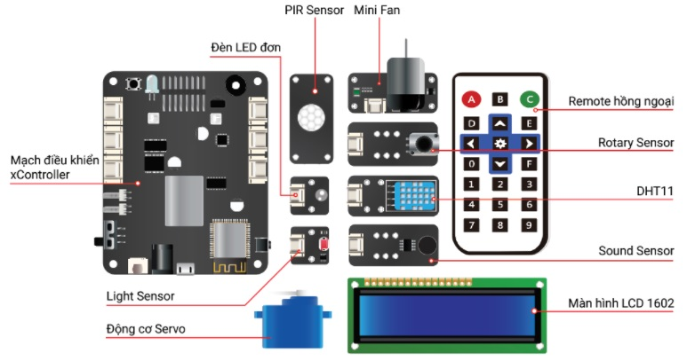

1. Giới thiệu về xBuild Creator Kit
xBuild Creator Kit là bộ kit được thiết kế dành cho giáo dục STEM, giúp các em làm quen với thế giới lập trình và điện tử một cách dễ dàng thông qua các ứng dụng thực tế. Bộ kit có thể được lập trình được bằng ngôn ngữ khối lệnh (cho các em từ 8-12 tuổi) hoặc ngôn ngữ nâng cao như Arduino, MicroPython (cho các lứa tuổi cao hơn).
Bộ điều khiển xController với cấu hình mạnh mẽ và 12 module đều sử dụng chuẩn cắm Plug & Play, giúp việc thực hành và sáng tạo các ứng dụng khoa học trở nên dễ dàng hơn bao giờ hết, đặc biệt phù hợp với các lớp học STEM.
{kind=link}
Thành phần bộ kit
1 X Hộp điều khiển xController
Có vi xử lý để lập trình
Thực hiện giao tiếp với các module và xử lý thông tin, điều khiển chúng
Tích hợp sẵn: Đèn LED RGB, loa, nút nhấn, cảm biến gia tốc và Gyroscope, LED thu phát hồng ngoại.
1 X LED Đơn
Đèn LED đơn sắc, hiển thị trạng thái
1 X DHT11
Cảm nhận và đo nhiệt độ, độ ẩm của môi trường xung quanh
1 X Rotary sensor
Cảm biến xoay, giúp nhận thông tin điều khiển từ người
1 X PIR sensor
Cảm biến phát hiện có người chuyển động
1 X Sound sensor
Cảm biến đo cường độ âm thanh
1 X Light sensor
Cảm biến đo cường độ ánh sáng
1 X Màn hình LCD 1602
Màn hình LCD đơn sắc, gồm 16 cột, 2 hàng chữ
1 X Mini Fan
Quạt mini
1 X Servo Mini
Động cơ Servo loại nhỏ
1 X Remote hồng ngoại
Điều khiển hệ thống từ xa, tương tự như remote TV, máy lạnh…
1 X Dây cáp USB
Kết nối mạch xController với máy tính
6 X Dây nối tín hiệu
Kết nối các module với hộp điều khiển xController
1 X Mô hình nhà thông minh
Mô hình nhà, có thể gắn các module và mạch xController vào để tạo thành một ngôi nhà thông minh.